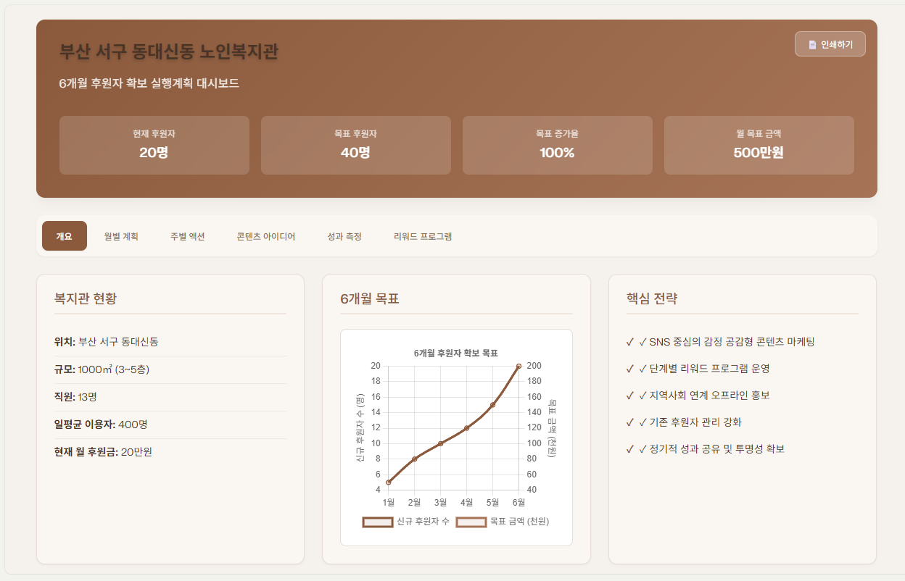

후원 전략 컨설팅 (Sponsorship Consulting)
**Perplexity Labs**와 인공지능의 심층 탐색 능력을 활용하여 경영 실무에 필요한 컨설팅 대시보드를 구축합니다. 전문가 수준의 후원 전략 분석과 개인 프로필 웹사이트 구축 등 다양한 자동화 모델을 설계할 수 있습니다.
🏢
컨설팅 대시보드 구축
기관의 데이터와 Perplexity의 추론 기능을 결합해 전문적인 대시보드를 생성합니다.
🕸️
웹 환경 자동화
간단한 지시만으로 개인 웹사이트 등을 개발하는 코드를 자동 생성합니다.

Perplexity Labs를 활용한 전문 대시보드
💡 활용 사례 (Use Case)
- [경영 컨설팅] 우리 기관에 맞는 후원 확대 전략 보고서 자동 생성
- [포트폴리오] AI로 직접 개발하는 개인 홍보용 멀티 웹사이트